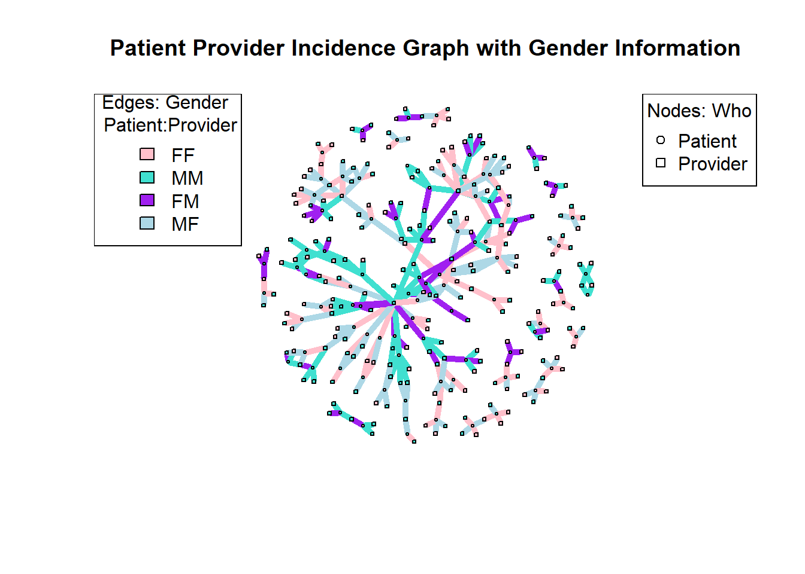

library(tidyverse)
library(readr)
library(igraph)
library(sna)
library(intergraph)
library(statnet)
library(ggplot2)
library(sf)
library(tidyverse)
library(tmap)
library(tigris)
library(stplanr)This post will explore the a Gender Matrix
Read in Data
pat_attr <- read_csv("post5drug_data/pat_attr.csv",
col_types = cols(...1 = col_skip()))
pro_attr <- read_csv("post5drug_data/pro_attr.csv",
col_types = cols(...1 = col_skip()))
encounters_cleaning <- read_csv("post5drug_data//encounters_cleaning.csv",
col_types = cols(...1 = col_skip()))
encounters_cleaned <- read_csv("post5drug_data//encounters_cleaned.csv",
col_types = cols(...1 = col_skip()))
encounter_attributes <- read_csv("post5drug_data/encounter_attributes.csv",
col_types = cols(...1 = col_skip()))
encounters_el <- read_csv("post5drug_data/encounters_el.csv",
col_types = cols(...1 = col_skip()))
encounters_st_3 <- read_csv("post5drug_data/encounters.st.3.csv",
col_types = cols(...1 = col_skip()))
attribute_list <- read.csv("post5drug_data/attribute_list.csv")
pat_blks6 <- readRDS("pat_blks6_results.rds")
prov_blks6 <- readRDS("prov_blks6_results.rds")Create Gender Matrix
#create edgelist
# Sample dataframe
# Function to calculate gender sameness
calculate_gender_sameness <- function(gender1, gender2) {
if (gender1 == "Female" && gender2 == "Female") {
return(1) # Female patient and female provider
} else if (gender1 == "Male" && gender2 == "Male") {
return(2) # Male patient and male provider
} else if (gender1 == "Female" && gender2 == "Male") {
return(3) # Female patient and male provider
} else if (gender1 == "Male" && gender2 == "Female") {
return(4) # Male patient and female provider
} else {
return(NA) # Unknown or missing values
}
}
# Apply function to create gender sameness column
encounter_attributes$GENDER_SAMENESS <- mapply(calculate_gender_sameness, encounter_attributes$GENDER.x, encounter_attributes$GENDER.y)
gender_sameness_df <- encounter_attributes %>%
select(PATIENT, PROVIDER, GENDER.x, GENDER.y, GENDER_SAMENESS) %>%
distinct(PATIENT, PROVIDER, GENDER.x, GENDER.y, GENDER_SAMENESS)
gender_edgelist <- encounter_attributes %>%
select(PATIENT, PROVIDER, GENDER_SAMENESS) %>%
distinct(PATIENT, PROVIDER, GENDER_SAMENESS)Check Gender Edgelist
head(gender_edgelist)# A tibble: 6 × 3
PATIENT PROVIDER GENDER_SAMENESS
<chr> <chr> <dbl>
1 Annice210 Gleason633 Clement78 Gleason633 4
2 Annice210 Gleason633 Enriqueta274 Barton704 1
3 Annice210 Gleason633 Kim439 Hyatt152 4
4 Julianne852 Barrows492 Buck819 Johnson679 4
5 Julianne852 Barrows492 Madelaine318 Walker122 1
6 Julianne852 Barrows492 Soledad678 Calderón210 1dim(gender_edgelist)[1] 341 3gender_edgelist <- data.frame(gender_edgelist)
class(gender_edgelist)[1] "data.frame"g_attr_list <- (do.call(list, gender_sameness_df))Create Gender Matrix
g.stat <- network(gender_edgelist, directed = FALSE, bipartite = TRUE, matrix.type = "edgelist", vertex.attr = g_attr_list)
# create bipartite network with attributes
gender.ig <- graph_from_biadjacency_matrix(g.stat, weight = TRUE)V(gender.ig)$shape <- ifelse(V(gender.ig)$type, "square", "circle")
# Define color palette for the GENDER_SAMENESS attribute
color_palette <- c("pink", "turquoise", "purple", "lightblue")
# Map color palette to the GENDER_SAMENESS values
edge_colors <- color_palette[g_attr_list$GENDER_SAMENESS]
vertex_colors <- ifelse(g_attr_list$GENDER.x == "Female", "pink", "turquoise")
# Plot the graph with colored edges
plot(gender.ig, layout = layout.fruchterman.reingold,
vertex.size = 2,
vertex.label.cex = 0.8,
vertex.color = vertex_colors,
vertex.label = NA,
edge.color = edge_colors,
edge.width = 5,
main = "Patient Provider Incidence Graph with Gender Information")
# Define legend for vertex colors
legend("topleft",
legend = c("FF", "MM", "FM", "MF"), # You can customize these labels
fill = c("pink", "turquoise", "purple", "lightblue"), # Fill colors corresponding to vertex colors
title = paste("Edges: Gender", "\n", "Patient:Provider")) # Legend title
# Define legend for vertex shapes
legend("topright",
legend = c("Patient", "Provider"), # You can customize these labels
pch = c(1, 0), # Point shapes corresponding to vertex shapes
title = "Nodes: Who") # Legend title
The above graph does not represent the data well. There are too many inconsistencies.
# Define the custom color palette based on the values of g_attr_list$GENDER_SAMENESS
custom_color_palette <- c( "turquoise", "purple", "gray", "pink")
# Get unique values of g_attr_list$GENDER_SAMENESS
unique_values <- unique(g_attr_list$GENDER_SAMENESS)
# Create a color mapping between unique values and custom colors
color_mapping <- setNames(custom_color_palette, unique_values)
# Map the edge colors using the color mapping
edge_colors <- sapply(g_attr_list$GENDER_SAMENESS, function(value) color_mapping[value])
# Plot the graph with edge colors
GGally::ggnet2(g.stat,
edge.color = edge_colors,
edge.size = 1,
node.size = 2,
node.color = attribute_list$GENDER)Registered S3 method overwritten by 'GGally':
method from
+.gg ggplot2
I also feel these can’t be true. Looking at the way the colors change in vary scenarios between female and male nodes, these are not consistent.
# create bipartite network with attributes
encounters.stat <- network(encounters_el,
directed = FALSE,
bipartite = TRUE,
matrix.type = "edgelist",
vertex.attr = attribute_list)
encounters.stat Network attributes:
vertices = 308
directed = FALSE
hyper = FALSE
loops = FALSE
multiple = FALSE
bipartite = 86
total edges= 341
missing edges= 0
non-missing edges= 341
Vertex attribute names:
AGE block CITY GENDER INCOME MARITAL NAME RACE type vertex.names X
Edge attribute names:
COUNT library(ggplot2)
library(statnet)
# Assuming g.stat and encounters.stat are network objects
# If they are adjacency matrices, you can convert them to network objects using network() function
# Calculate correlation coefficient between g.stat and encounters.stat
correlation <- cor(as.sociomatrix(g.stat), as.sociomatrix(encounters.stat))
# Convert the correlation matrix to a data frame
correlation_df <- as.data.frame(as.table(correlation))
names(correlation_df) <- c("Network1", "Network2", "Correlation")
# Create a heatmap using ggplot2
ggplot(correlation_df, aes(Network1, Network2, fill = Correlation)) +
geom_tile(color = "white") +
scale_fill_gradient(low = "lightblue", high = "darkblue") +
theme_minimal() +
labs(title = "Correlation Between Network Objects",
x = "Network 1", y = "Network 2")# Convert the network objects to adjacency matrices
adj_matrix_g_stat <- as.sociomatrix(g.stat)
adj_matrix_encounters_stat <- as.sociomatrix(encounters.stat)
# Calculate the correlation coefficient between the adjacency matrices
corr_gender_encounters <- cor(adj_matrix_g_stat, adj_matrix_encounters_stat)
# Flatten the adjacency matrices into vectors
vector_g_stat <- as.vector(adj_matrix_g_stat)
vector_encounters_stat <- as.vector(adj_matrix_encounters_stat)
# Calculate the correlation coefficient between the vectors
total_corr_gender_encounters <- cor(vector_g_stat, vector_encounters_stat)
# Print the correlation coefficient
print(total_corr_gender_encounters)[1] 0.09826369A correlation of 0.098 suggests a weak positive correlation, with some tendency for the matrices to move together, but the relationship is not strong.
# Define custom colors for GENDER_SAMENESS levels
custom_colors <- c("pink", "turquoise", "purple", "green")
# Plot the data with custom color scale
ggplot(gender_sameness_df, aes(x = PATIENT, y = PROVIDER, color = factor(GENDER_SAMENESS))) +
geom_point(size = 3) +
scale_color_manual(values = custom_colors,
breaks = c(1, 2, 3, 4), # Specify breaks to align colors with levels
labels = c("F:F", "M:M", "F:M", "M:F"), # Labels for the legend
name = "Patient:Provider") +
labs(title = "Genders of Patients and Providers",
x = "Patient",
y = "Provider") +
theme_minimal() +
theme(axis.text.x = element_text(angle = 45, hjust = 1))
#Gender Graph
# block model graph using ggnet2
GGally::ggnet2(encounters.stat,
node.color = attribute_list$GENDER,
node.alpha = 1,
node.size=sna::degree(encounters.stat, gmode = "graph"),
node.shape = attribute_list$type,
size.legend = "Degree", # legend title for node size
color.palette = "Set1", # color palette
color.legend = "Gender", # legend title for node color
legend.position = "bottom", # legend at the bottom
edge.color = "COUNT",
edge.alpha = .5,
label = NA, # node labels
label.size = 3, # label size
label.trim = TRUE # trim long labels
) +
ggtitle("Provider Block Model Network (6)") +
theme(plot.title = element_text(hjust = 0.5)) # center align plot titleChi Tests
# Convert the data frame into a contingency table
patient_provider_gender_sameness <- table(gender_sameness_df$GENDER_SAMENESS )
# Perform chi-square test for independence
chi_square_test <- chisq.test(patient_provider_gender_sameness)
# Print the results
print(chi_square_test)
Chi-squared test for given probabilities
data: patient_provider_gender_sameness
X-squared = 12.349, df = 3, p-value = 0.006279Based on the results of Pearson’s chi-squared test with Yates’ continuity correction, we fail to reject the null hypothesis. In other words, we do not find significant evidence to suggest that the variables are associated.
gender_marital_df <- encounter_attributes %>%
select(PATIENT, PROVIDER, GENDER_SAMENESS, MARITAL)# Convert the data frame into a contingency table
patient_provider_gender_sameness_marital <- table(gender_marital_df$GENDER_SAMENESS, gender_marital_df$MARITAL)
# Perform chi-square test for independence
chi_square_test <- chisq.test(patient_provider_gender_sameness_marital)
# Print the results
print(chi_square_test)
Pearson's Chi-squared test
data: patient_provider_gender_sameness_marital
X-squared = 504.57, df = 9, p-value < 2.2e-16The result of Pearson’s Chi-squared test indicates a significant association between the variables. The test statistic, denoted as X-squared, has a value of 504.57 with 9 degrees of freedom. Additionally, the p-value is less than 2.2e-16, which is extremely small. Therefore, we reject the null hypothesis of independence, suggesting that there is a significant relationship between patient-provider gender sameness and marital status.
gender_RACE_df <- encounter_attributes %>%
select(PATIENT, PROVIDER, GENDER_SAMENESS, RACE)# Convert the data frame into a contingency table
patient_provider_gender_sameness_RACE <- table(gender_RACE_df$GENDER_SAMENESS, gender_RACE_df$RACE)
# Perform chi-square test for independence
chi_square_test <- chisq.test(patient_provider_gender_sameness_RACE)
# Print the results
print(chi_square_test)
Pearson's Chi-squared test
data: patient_provider_gender_sameness_RACE
X-squared = 954.24, df = 9, p-value < 2.2e-16